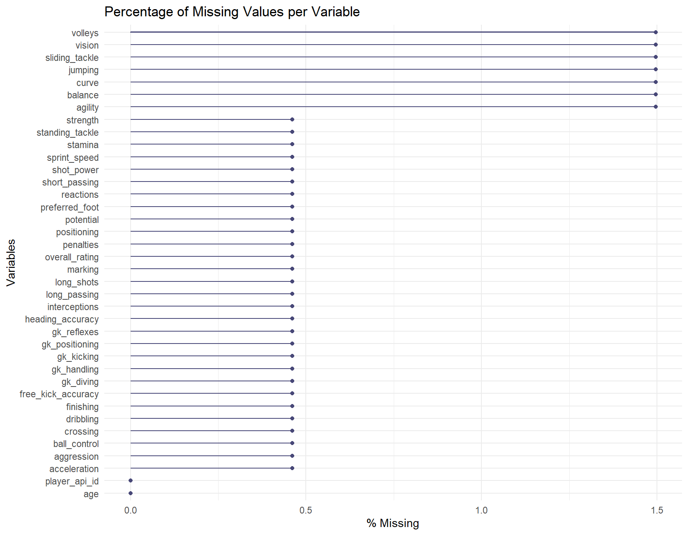
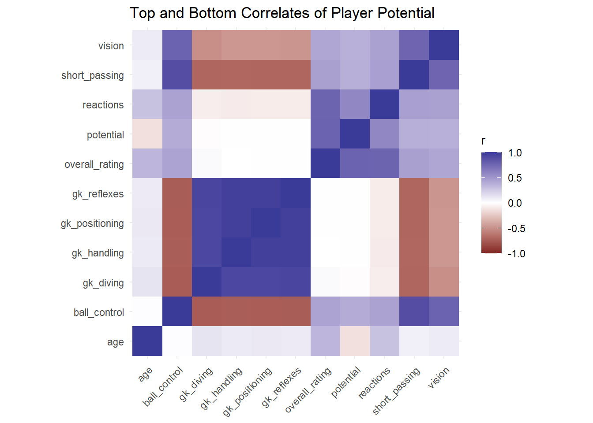
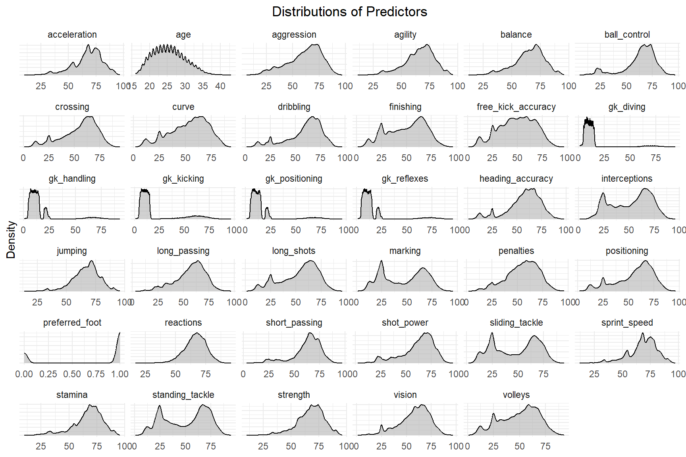
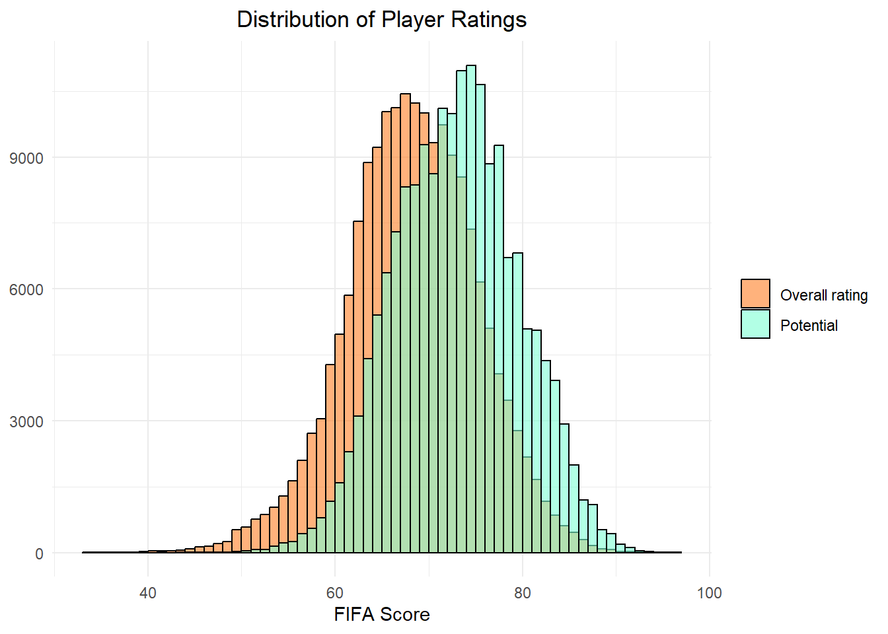
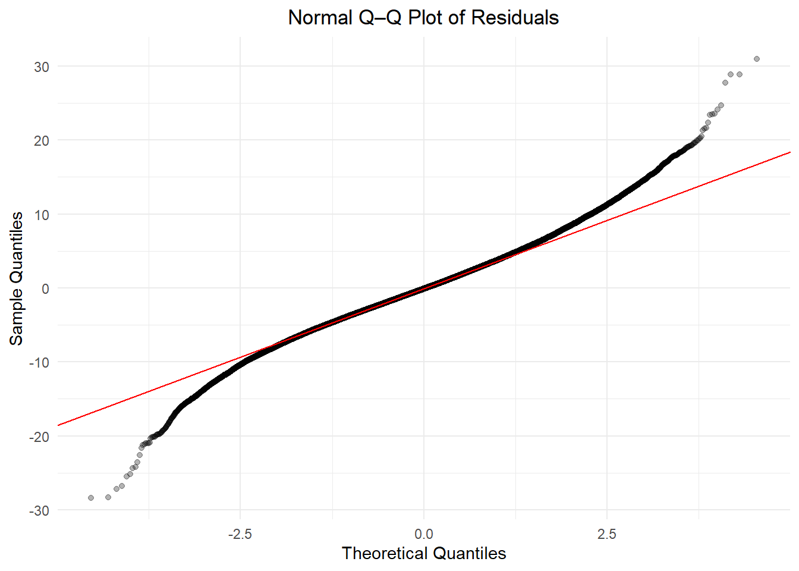

library(reticulate)
use_condaenv("keras3", required = TRUE)Statistical Learning: Final Project
Data Import
Load reticulate-package to connect to a Conda environment for keras3 import.
Load all other required packages for data handling, preprocessing, model estimation, cross-validation and performance evaluation.
pacman::p_load(DBI, RSQLite, tidyverse, lubridate, naniar, caret, Metrics, keras3, ggh4x, glmnet)Connect to the SQLite database, extract player-level information by joining player metadata with player attributes, and close the database connection.
con <- dbConnect(RSQLite::SQLite(), dbname = "data/database.sqlite")
df_player_raw <- dbGetQuery(con, "SELECT * FROM Player JOIN Player_Attributes USING (player_api_id)")
names(df_player_raw) <- make.unique(names(df_player_raw))
dbDisconnect(con)Exploratory Analysis
Clean and prepare the player dataset for modeling and analysis: remove incomplete rows, compute player age at the time of each attribute measurement, drop non-predictive identifiers and metadata, and exclude observations with age < 16 as we identified potentially erroneous records for very young players.
df_player <- df_player_raw %>%
mutate(date = ymd_hms(date),
birthday = ymd_hms(birthday),
age = floor(time_length(interval(birthday, date),"years"))) %>%
select(-id,-id.1,-player_name, -player_fifa_api_id, -player_fifa_api_id.1, -weight, -height, -birthday, -date, -defensive_work_rate, -attacking_work_rate) %>%
filter(age>=16)Visualizing the extent of missing data across variables in the player dataset by plotting the percentage of missing values for each variable, providing a overview of data completeness and highlighting variables that may require cleaning or exclusion prior to modeling.
gg_miss_var(df_player, show_pct = TRUE) +
labs(title = "Percentage of Missing Values per Variable")
This chunk computes correlations between player potential and all numeric variables, selects the five strongest and five weakest correlates, and visualizes their pairwise correlations in a heatmap.
target <- "potential"
cors <- df_player %>%
select(where(is.numeric)) %>%
summarise(across(-all_of(target),~ cor(.x, .data[[target]], use = "pairwise.complete.obs"))) %>%
pivot_longer(everything(), names_to = "var", values_to = "r")
top5 <- cors %>% arrange(desc(r)) %>% slice(1:5)
flop5 <- cors %>% arrange(r) %>% slice(1:5)
vars <- c(target, top5$var, flop5$var)
num_df <- df_player %>% select(all_of(vars))
C <- cor(num_df, use = "pairwise.complete.obs")
as.data.frame(C) %>%
tibble::rownames_to_column("Var1") %>%
pivot_longer(-Var1, names_to = "Var2", values_to = "corr") %>%
filter(!is.na(corr)) %>%
ggplot(aes(Var2, Var1, fill = corr)) +
geom_tile() +
scale_fill_gradient2(limits = c(-1, 1)) +
coord_fixed() +
theme_minimal() +
theme(axis.text.x = element_text(angle = 45, hjust = 1)) +
labs(x = NULL, y = NULL, fill = "r",title = "Top and Bottom Correlates of Player Potential")
Visualizing the marginal distributions of all predictors using faceted density plots, allowing a compact inspection of scale differences, skewness, and distributional shapes across variables.
predictors <- df_player %>%
select(-potential, -overall_rating, -player_api_id) %>%
select(where(is.numeric)) %>%
colnames()
predictors <- c(predictors, "preferred_foot")
df_long <- df_player %>%
mutate(preferred_foot = ifelse(preferred_foot == "right", 1, 0)) %>%
pivot_longer(cols = all_of(predictors),
names_to = "predictor", values_to = "value")
ggplot(df_long, aes(x = value)) +
geom_density(fill = "grey70", alpha = 0.6) +
facet_wrap(~ predictor, scales = "free") +
labs(title = "Distributions of Predictors", x = NULL, y = "Density") +
theme_minimal() + theme( plot.title = element_text(hjust = 0.5), axis.text.y = element_blank())
This chunk compares the empirical distributions of player potential and overall rating.
df_plot <- df_player %>%
select(potential, overall_rating) %>%
pivot_longer(cols = c(potential, overall_rating),names_to = "variable",values_to = "value")
ggplot(df_plot, aes(x = value, fill = variable)) +
geom_histogram(binwidth = 1,boundary = 0,position = "identity",alpha = 0.6,color = "black") +
scale_fill_manual(values = c(potential = "aquamarine",overall_rating = "chocolate1"),
labels = c(potential = "Potential",overall_rating = "Overall rating")) +
labs(title = "Distribution of Player Ratings", x = "FIFA Score", y = NULL, fill = NULL) +
theme_minimal() +
theme(plot.title = element_text(hjust = 0.5))
Construct the design matrix with one-hot encoding for categorical variables and define the target variable (potential).
df_player <- df_player %>% filter(complete.cases(.)) %>%
select(-overall_rating)
X <- model.matrix(potential~.,df_player)[,-1]
y <- df_player$potentialTask 1 - Deep Feedforward Neural Network
This script implements a nested, group-aware cross-validated neural network training pipeline for regression using Keras. To prevent data leakage across repeated observations of the same player, all cross-validation splits are grouped by player_api_id, ensuring that each player appears in only one fold at a time. A 5-fold outer cross-validation loop is used to obtain unbiased estimates of generalization performance, while an inner validation split (20% of players within each outer training fold) is employed for hyperparameter selection. Within each fold, features are standardized using parameters learned exclusively from the inner training set and subsequently applied to validation, training, and test data. Model selection is conducted via a grid search over network architecture (three fully connected hidden layers), dropout rates, and learning-rate annealing factors. Each candidate model is trained with L2 regularization, batch normalization, dropout, early stopping, and learning-rate reduction on plateau to promote stable convergence and mitigate overfitting. The hyperparameter configuration yielding the lowest validation MSE is selected, and the corresponding model is evaluated on the held-out test fold.
## The code chunk is set to false to not re-run the entire training loop
set.seed(123)
# Extract player IDs and remove the player_api_id column from the feature matrix
player_id <- df_player$player_api_id
X <- X[, colnames(X) != "player_api_id"]
# Create directory to store fold models
dir.create("models_nn", showWarnings = FALSE)
## 5-fold, grouped by player
outer_folds <- groupKFold(group = player_id, k = 5)
# Initialize storage for outer CV result, as well as best hyperparameters and best loss logs per fold
outer_results <- vector("list", 5)
best_params <- vector("list", 5)
loss_log <- list()
#Keras callback; prints training and validation loss per epoch with CV indices
loss_printer <- function(i, g) {
callback_lambda(
on_epoch_end = function(epoch, logs) {
cat(sprintf(
"Outer %d | Grid %d | Epoch %d | loss=%.4f | val=%.4f\n",
i, g, epoch + 1,
logs$loss,
logs$val_loss))})}
# Initialize hyperparameter grid (identical to lecture)
grid <- crossing(
nodes1 = c(128, 256),
nodes2 = c(64, 128),
nodes3 = c(32, 64),
dropout1 = c(0.3, 0.4),
dropout2 = c(0.2, 0.3),
dropout3 = c(0.1, 0.2),
lr_annealing = c(0.1, 0.5))
# Initialize L2 Regularizer
l2_reg <- regularizer_l2(0.001)
# Build, compile, and train 3-hidden-layer neural network with regularization, early stopping, learning-rate annealing, and custom loss logging; returns fitted model, training history, and validation loss
build_and_fit <- function(X_train, y_train,
X_val, y_val,
nodes1, nodes2, nodes3,
dropout1, dropout2, dropout3,
lr_annealing,
epochs=50,
i = NA, g = NA) {
## Define sequential Keras model with three dense hidden layers
model <- keras_model_sequential() %>%
### First hidden layer with L2 regularization, batch norm, and dropout
layer_dense(nodes1, activation = "relu",
input_shape = c(ncol(X_train)),
kernel_regularizer = l2_reg) %>%
layer_batch_normalization() %>%
layer_dropout(dropout1) %>%
### Second hidden layer
layer_dense(nodes2,
activation = "relu",
kernel_regularizer = l2_reg) %>%
layer_batch_normalization() %>%
layer_dropout(dropout2) %>%
### Third hidden layer
layer_dense(nodes3,
activation = "relu",
kernel_regularizer = l2_reg) %>%
layer_batch_normalization() %>%
layer_dropout(dropout3) %>%
### Output layer for regression
layer_dense(1, activation="linear")
## Compile model using Adam optimizer and MSE Loss
model %>% compile(
optimizer = optimizer_adam(),
loss = "mean_squared_error")
## Traing model with early stopping, learning-rate adjustment, and custom loss printing (see above)
history <- model %>% fit(
X_train, y_train,
epochs = epochs,
batch_size = 128,
validation_data = list(X_val, y_val),
callbacks = list(
callback_early_stopping(
patience = 5,
restore_best_weights = TRUE),
callback_reduce_lr_on_plateau(
factor = lr_annealing),
loss_printer(i, g)),
verbose = 0)
## Return trained model, training history, and best validation loss
list(
model = model,
history = history,
val_loss = min(history$metrics$val_loss))}
# Start training loop with first fold (adaptable in case of interruptions)
start_i <- 1
# OUTER LOOP over k-folds
for (i in start_i:length(outer_folds)) {
cat("Outer fold:", i, "\n")
## Select indices for outer training fold, define complementary test indices
train_idx <- outer_folds[[i]]
test_idx <- setdiff(seq_len(nrow(X)), train_idx)
## Subset features and target into training and test sets
X_train <- X[train_idx, ]
X_test <- X[test_idx, ]
y_train<-y[train_idx]
y_test <- y[test_idx]
## Fold-specific inner validation-split
groups_outer <- unique(player_id[train_idx])
### Randomly select 20% of unique player IDs for inner validation
val_groups <- sample(
groups_outer,
size = ceiling(0.2 * length(groups_outer)))
### Indices of inner validation and inner training observations
inner_val_idx <- which(player_id[train_idx] %in% val_groups)
inner_train_idx <- setdiff(
seq_len(nrow(X_train)),
inner_val_idx)
X_inner_train <- X_train[inner_train_idx, ]
X_inner_val <- X_train[inner_val_idx, ]
## Fold-specific normalization
### Fit scaler on inner training features to prevent data leakage
preproc <- preProcess(X_inner_train, method = c("center", "scale"))
### Scale inner training and validation, as well as full train and test features
X_inner_train_scaled <- predict(preproc, X_inner_train)
X_inner_val_scaled <- predict(preproc, X_inner_val)
X_train_scaled <- predict(preproc, X_train)
X_test_scaled <- predict(preproc, X_test)
## Grid Search
### Grid results tracker
grid_results <- grid %>%
mutate(val_loss = NA_real_)
### Best fit and best validation loss tracker
best_fit <- NULL
best_val_loss <- Inf
### Build and fit model for each grid combination
for (g in seq_len(nrow(grid))) {
fit <- build_and_fit(
X_inner_train_scaled,
y_train[inner_train_idx],
X_inner_val_scaled,
y_train[inner_val_idx],
grid$nodes1[g],
grid$nodes2[g],
grid$nodes3[g],
grid$dropout1[g],
grid$dropout2[g],
grid$dropout3[g],
grid$lr_annealing[g],
i = i, g = g
)
#### Tracks validation loss for each grid combination
grid_results$val_loss[g] <- fit$val_loss
#### Updates best validation loss and model fit
if (fit$val_loss < best_val_loss) {
best_val_loss <- fit$val_loss
best_fit <- fit
}
clear_session()
}
## Stores best hyperparameter combination of fold
best_params[[i]] <- grid_results %>%
arrange(val_loss) %>%
slice(1)
## Store loss descent
loss_log[[paste0("fold_", i)]] <-
tibble(
Fold = i,
Epoch = seq_along(best_fit$history$metrics$val_loss),
Train_Loss=best_fit$history$metrics$loss,
Val_Loss = best_fit$history$metrics$val_loss)
## Save trained model
model_nn <- best_fit$model
model_path<-sprintf("models_nn/nn_outer_fold_%d.keras", i)
save_model(
model_nn,
filepath = model_path,
overwrite = TRUE)
## Fold evaluation
y_pred_train <- predict(model_nn, X_train_scaled)
y_pred_test <- predict(model_nn, X_test_scaled)
## Store evaluation metrics
outer_results[[i]] <- tibble(
Fold = i,
Train_MSE = mse(y_train, y_pred_train),
Test_MSE = mse(y_test, y_pred_test),
Train_MAE = mae(y_train, y_pred_train),
Test_MAE = mae(y_test, y_pred_test))
clear_session()
}
## Save parmeters and loss descent of optimal hyperparameter combination per fold
saveRDS(best_params, file = "models_nn/best_params.rds")
saveRDS(loss_log, file = "models_nn/loss_log.rds")
## Also save evaluation metrics
cv_results <- bind_rows(outer_results)
saveRDS(cv_results, file = "models_nn/evaluation_metrics_nn.rds")## Display the grid options and optimal hyperparameter combination per fold
grid_rows <- tibble(
Fold=c("Option A", "Option B"),
nodes1 = c(128, 256),
nodes2 = c(64, 128),
nodes3 = c(32, 64),
dropout1 = c(0.3, 0.4),
dropout2 = c(0.2, 0.3),
dropout3 = c(0.1, 0.2),
lr_annealing = c(0.1, 0.5))
best_params <- bind_rows(
grid_rows,
bind_rows(readRDS("models_nn/best_params.rds"))%>%
mutate(Fold=as.character(Fold)))%>%
rename("Grid/Fold"="Fold")
best_params# A tibble: 7 × 9
`Grid/Fold` nodes1 nodes2 nodes3 dropout1 dropout2 dropout3 lr_annealing
<chr> <dbl> <dbl> <dbl> <dbl> <dbl> <dbl> <dbl>
1 Option A 128 64 32 0.3 0.2 0.1 0.1
2 Option B 256 128 64 0.4 0.3 0.2 0.5
3 1 128 64 64 0.4 0.2 0.1 0.5
4 2 128 128 32 0.3 0.3 0.1 0.1
5 3 128 128 64 0.3 0.2 0.1 0.5
6 4 128 128 64 0.4 0.3 0.1 0.1
7 5 128 128 64 0.3 0.2 0.1 0.5
# ℹ 1 more variable: val_loss <dbl># Plotting learning cruves of optimal grid model per fold
loss_log <- readRDS("models_nn/loss_log.rds")
loss_log_df <- bind_rows(loss_log)
loss_log_df <- loss_log_df %>%
pivot_longer(
cols = c(Train_Loss, Val_Loss),
names_to = "Loss_Type",
values_to = "MSE" )
ggplot(loss_log_df, aes(x = Epoch,y = MSE,
colour = factor(Fold),
group = Fold)) +
geom_line(linewidth = 1) +
facet_wrap(
~ Loss_Type,
ncol = 1,
scales = "free_y",
labeller = labeller(Loss_Type = c(
Train_Loss = "Training Loss",
Val_Loss = "Validation Loss"))) +
facetted_pos_scales(y = list(
Loss_Type == "Train_Loss" ~ scale_y_continuous(limits = c(0,50)),
Loss_Type == "Val_Loss" ~ scale_y_continuous(limits=c(0,20)))) +
labs(colour="Fold") +
theme_minimal()
cv_results<-readRDS("models_nn/evaluation_metrics_nn.rds")
cv_results# A tibble: 5 × 5
Fold Train_MSE Test_MSE Train_MAE Test_MAE
<int> <dbl> <dbl> <dbl> <dbl>
1 1 7.44 8.14 1.95 2.03
2 2 7.37 7.70 1.94 1.99
3 3 7.18 7.87 1.91 2.01
4 4 7.72 8.09 2.00 2.05
5 5 7.06 7.75 1.89 2.00cv_results %>%
summarise(
"Mean Train MSE" = mean(Train_MSE),
"Mean Test MSE" = mean(Test_MSE),
"Mean Train MAE" = mean(Train_MAE),
"Mean Test MAE" = mean(Test_MAE))# A tibble: 1 × 4
`Mean Train MSE` `Mean Test MSE` `Mean Train MAE` `Mean Test MAE`
<dbl> <dbl> <dbl> <dbl>
1 7.36 7.91 1.94 2.01# Inference loop using the pre-trained models
set.seed(123)
player_id <- df_player$player_api_id
X <- X[, colnames(X) != "player_api_id"]
outer_folds <- groupKFold(group = player_id, k = 5)
# Storage for fold-wise test predictions
oof_predictions <- vector("list", length(outer_folds))
for (i in seq_along(outer_folds)) {
cat("Running inference for outer fold:", i, "\n")
## Recreate train / test split
train_idx <- outer_folds[[i]]
test_idx <- setdiff(seq_len(nrow(X)), train_idx)
X_train <- X[train_idx, ]
X_test <- X[test_idx, ]
y_train <- y[train_idx]
y_test <- y[test_idx]
## Recreate inner split to refit scaler (no leakage)
groups_outer <- unique(player_id[train_idx])
val_groups <- sample(
groups_outer,
size = ceiling(0.2 * length(groups_outer)))
inner_val_idx <- which(player_id[train_idx] %in% val_groups)
inner_train_idx <- setdiff(seq_len(nrow(X_train)), inner_val_idx)
X_inner_train <- X_train[inner_train_idx, ]
## Fold-specific scaling (same logic as training)
preproc <- preProcess(X_inner_train, method = c("center", "scale"))
X_test_scaled <- predict(preproc, X_test)
## Load trained model
model_path <- sprintf("models_nn/nn_outer_fold_%d.keras", i)
model_nn <- load_model(model_path)
## Inference
y_pred <- as.numeric(predict(model_nn, X_test_scaled, verbose=FALSE))
## Store out-of-fold predictions
oof_predictions[[i]] <- tibble(
fold = i,
row_id = test_idx,
player_api_id = player_id[test_idx],
actual_potential = y_test,
predicted_potential = y_pred,
residual = abs(y_test - y_pred))
clear_session()}Running inference for outer fold: 1
Running inference for outer fold: 2
Running inference for outer fold: 3
Running inference for outer fold: 4
Running inference for outer fold: 5 player_lookup <- df_player_raw %>%
select(player_api_id, player_name) %>%
distinct()
## Concatenate all folds
oof_results <- bind_rows(oof_predictions) %>%
arrange(row_id)%>%
mutate(residual=actual_potential-predicted_potential)%>%
left_join(player_lookup, by = "player_api_id")%>%
group_by(player_api_id) %>%
summarise(
player_name = first(player_name),
mean_actual_potential = mean(actual_potential, na.rm = TRUE),
mean_predicted_potential = mean(predicted_potential, na.rm = TRUE),
mean_residual = mean(residual, na.rm = TRUE),
.groups = "drop")
# 10 Largest Overpredictions of the Neural Network
oof_results%>%
arrange(mean_residual)%>%
head(10)# A tibble: 10 × 5
player_api_id player_name mean_actual_potential mean_predicted_poten…¹
<int> <chr> <dbl> <dbl>
1 207240 Branko Bankovic 57 68.6
2 268586 Anderson Melo 61 72.0
3 112561 Boubacar Mansaly 54.6 64.3
4 243516 Enzio Boldewijn 67 76.3
5 66995 Marco Mangold 51 60.3
6 176303 Branislav Micic 58 66.9
7 24663 Jason Koumas 63.3 72.2
8 166585 Luis Filipe Pimen… 55 63.5
9 38722 Johann Vogel 65 73.5
10 178599 Krzysztof Kaczmar… 51 59.0
# ℹ abbreviated name: ¹mean_predicted_potential
# ℹ 1 more variable: mean_residual <dbl># 10 Largest Underpredictions of the Neural Network
oof_results %>%
arrange(desc(mean_residual)) %>%
head(10)# A tibble: 10 × 5
player_api_id player_name mean_actual_potential mean_predicted_poten…¹
<int> <chr> <dbl> <dbl>
1 26231 Frederic Biancala… 84 71.4
2 30698 Marko Babic 85.3 74.3
3 39211 Nicola Ventola 80 69.3
4 127189 Dragan Mihajlovic 72 61.4
5 25863 Bastien Geiger 73.7 63.5
6 38243 David Odonkor 80.5 70.4
7 95343 Graeme Owens 72.8 62.9
8 25642 Kaba Diawara 76 66.2
9 116011 El Fardou Ben Nab… 76.5 66.8
10 30369 Robbie Fowler 84 74.4
# ℹ abbreviated name: ¹mean_predicted_potential
# ℹ 1 more variable: mean_residual <dbl>Task 2 - Baseline Comparison with Traditional SL Models
We estimate a regularized baseline model for predicting player potential and evaluate its out-of-sample performance using grouped 10-fold cross-validation. Specifically, we employ a Lasso regression, which provides a natural extension of the linear model by introducing \(\ell_1\)-regularization to control overfitting and perform implicit feature selection.
To prevent information leakage arising from repeated observations of the same player, we, once again, construct group-wise folds based on player identifiers, ensuring that all observations of a given player are assigned to the same fold. Within each training fold, the regularization parameter is selected via internal cross-validation, and the model is then estimated on the corresponding training data.
Predictions are generated for both training and test folds, and model performance is assessed using mean squared error (MSE) and mean absolute error (MAE). Finally, results are averaged across folds to obtain a robust estimate of the model’s generalization performance.
# Set up 10-fold cross validation indices
set.seed(123)
player_id <- df_player$player_api_id
X <- X[, !colnames(X) %in% c("player_api_id","player_fifa_api_id.1")]
folds <- groupKFold(group=player_id, k = 10)
mse_train <- c()
mse_test <- c()
mae_train <- c()
mae_test <- c()
predictions <- tibble()
# Perform 10-fold CV
for (i in 1:10) {
train_idx <- folds[[i]]
test_idx <- setdiff(seq_len(nrow(X)), train_idx)
X_train <- X[train_idx, ]
X_test <- X[test_idx, ]
y_train <- y[train_idx]
y_test <- y[test_idx]
# Model matrices (glmnet will standardize internally)
X_train_mm <- model.matrix(~ . - 1, data = as.data.frame(X_train))
X_test_mm <- model.matrix(~ . - 1, data = as.data.frame(X_test))
cv_fit <- cv.glmnet(x = X_train_mm,y = y_train, alpha = 1, standardize = TRUE)
# ---- Predict ----
y_pred_train <- as.numeric(predict(cv_fit, newx = X_train_mm, s = "lambda.min"))
y_pred_test <- as.numeric(predict(cv_fit, newx = X_test_mm, s = "lambda.min"))
predictions <- bind_rows(predictions,tibble(fold = i, player_api_id = player_id[test_idx], actual = y_test,predicted = y_pred_test))
# metrics
mse_train[i] <- mse(y_train, y_pred_train)
mse_test[i] <- mse(y_test, y_pred_test)
mae_train[i] <- mae(y_train, y_pred_train)
mae_test[i] <- mae(y_test, y_pred_test)}
# results using tidyverse tibble
cv_results <- tibble(
Fold = 1:10,
Train_MSE = mse_train,
Test_MSE = mse_test,
Train_MAE = mae_train,
Test_MAE = mae_test)
cv_results# A tibble: 10 × 5
Fold Train_MSE Test_MSE Train_MAE Test_MAE
<int> <dbl> <dbl> <dbl> <dbl>
1 1 15.9 15.3 3.08 3.00
2 2 15.8 16.0 3.07 3.10
3 3 15.8 15.7 3.08 3.05
4 4 15.8 16.0 3.07 3.09
5 5 15.8 15.7 3.08 3.07
6 6 15.8 16.1 3.07 3.09
7 7 15.8 16.2 3.07 3.17
8 8 15.8 16.3 3.07 3.09
9 9 15.8 15.9 3.07 3.09
10 10 15.8 15.8 3.08 3.07# averaged over all folds
kfold_summary <- tibble(
Mean_Train_MSE = mean(mse_train),
Mean_Test_MSE = mean(mse_test),
Mean_Train_MAE = mean(mae_train),
Mean_Test_MAE = mean(mae_test))
kfold_summary# A tibble: 1 × 4
Mean_Train_MSE Mean_Test_MSE Mean_Train_MAE Mean_Test_MAE
<dbl> <dbl> <dbl> <dbl>
1 15.8 15.9 3.07 3.08The results indicate highly stable performance of the lasso model across all 10 folds. Training and test errors are consistently close in each fold, suggesting no evidence of overfitting. Test MSE varies only moderately across folds (around 15.78–15.88), while MAE remains tightly clustered around 3. This limited variability across folds indicates robust generalization performance of the baseline model.
Model Diagnostics
To assess the robustness of the baseline lasso regression model, we conduct a series of diagnostic checks examining key model assumptions and the stability of predictive performance.
Linearity Check
predictors <- colnames(X)
df_plot <- as_tibble(X) %>%
mutate(potential = y)
df_long <- df_plot %>%
pivot_longer(
cols = all_of(predictors),
names_to = "predictor",
values_to = "value")
ggplot(df_long, aes(x = value, y = potential)) +
geom_smooth(method = "lm",color="black") +
facet_wrap(~ predictor, scales = "free_x") +
labs(title = "Potential vs. Predictors",y = "Potential",x = NULL) +
theme_minimal() + theme(plot.title = element_text(hjust = 0.5))
The diagnostic plots indicate largely monotonic and approximately linear relationships between player potential and the majority of predictors. While the strength of associations varies across attributes, no clear nonlinear patterns or threshold effects are observed. Overall, the linearity assumption appears reasonably satisfied, supporting the use of a linear regression model as an appropriate baseline.
Homoskedasticity Check
model_full <- lm(y ~ ., data = as.data.frame(X))
df_resid <- tibble(fitted = fitted(model_full),resid = resid(model_full))
ggplot(df_resid, aes(x = fitted, y = resid)) +
geom_point(alpha = 0.2) +
geom_hline(yintercept = 0, linetype = "dashed", color = "red", linewidth = 1) +
labs(title = "Residuals vs. Fitted Values",x = "Fitted values",y = "Residuals") +
theme_minimal() + theme(plot.title = element_text(hjust = 0.5))
The residuals-versus-fitted plot shows that residuals are centered around zero with a broadly constant spread across the range of fitted values. While a slight increase in variance is visible in the mid-left-range, no clear funneling patten emerges. Overall, deviations from homoskedasticity appear mild and are unlikely to affect predictive performance.
Normality of Residuals
df_qq <- tibble(resid = resid(model_full))
ggplot(df_qq, aes(sample = resid)) +
stat_qq(alpha = 0.3) +
stat_qq_line(color = "red") +
labs(title = "Normal Q–Q Plot of Residuals", x = "Theoretical Quantiles", y = "Sample Quantiles") +
theme_minimal() + theme(plot.title = element_text(hjust = 0.5))
The Q–Q plot of the residuals indicates approximate normality, with observations closely following the reference line in the central region. Deviations are visible in the tails, suggesting slightly heavier tails than a normal distribution, which is expected given the large sample size. These deviations are unlikely to affect the model’s predictive performance massivly.